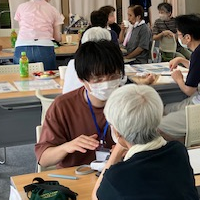

About Me

HIROSE Ryota
看護学専攻の学生です。精神看護に興味があります。
看護学に情報科学を取り入れ，看護課題の解決につなげたいと考えています。
所属
- 金沢大学 医薬保健学域 保健学類 看護学専攻 （精神看護学研究室）
経歴
- 金沢大学大学院 自然科学研究科 電子情報科学専攻 博士前期課程 修了
- 金沢大学 医薬保健学域 保健学類 看護学専攻 在学中
Works
- Patient Health Questionnaire-9 PHQ-9を用いた簡易メンタルヘルス評価ツール（自己評価用）
Activities
ボランティア
-
輪島市仮設住宅での「健康づくりのひろば」学生ボランティア
「健康づくりのひろば」を開催 | 金沢大学 能登里山里海未来創造センター -
「日本精神保健看護学会第35回学術集会・総会」学生ボランティア
日本精神保健看護学会第35回学術集会学会プログラム